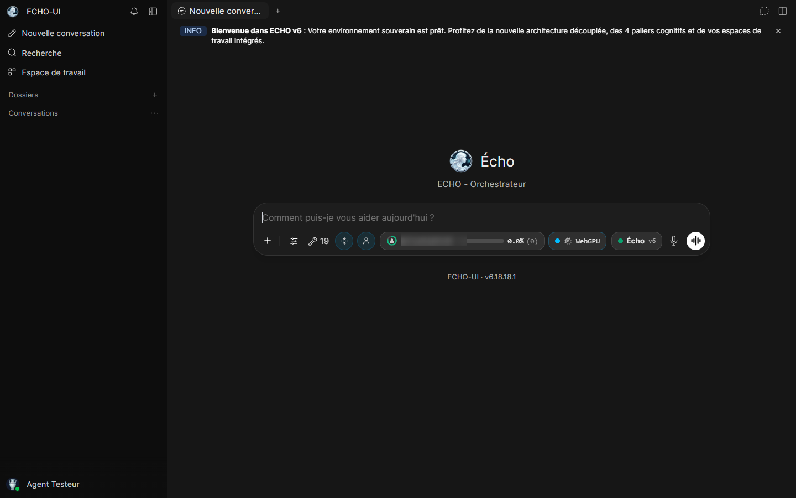

ECHO Framework v6
ECHO (Espace Cognitif Heuristique Opérationnel) est une plateforme d'assistance cognitive auto-hébergée conçue pour exécuter des tâches complexes dans un environnement privé et vérifiable. Contrairement à un simple agent conversationnel, ECHO associe le raisonnement des modèles Gemini à des espaces d'action persistants : un éditeur de documents et de code avec historique, un navigateur web autonome observable en direct, un coffre de connecteurs chiffré, une mémoire à long terme et un bac à sable d'exécution isolé.
À quoi sert ECHO au quotidien ?
Lorsque vous travaillez avec un assistant classique, vos échanges restent figés dans une bulle de texte : impossible de suivre ce que l'assistant consulte sur le web, difficile de modifier un document sans tout régénérer, et risqué de lui confier des accès ou des fichiers volumineux. ECHO résout ce problème en vous donnant un poste de travail complet où vous voyez ce que l'assistant fait, où vos préférences et vos fichiers restent sous votre contrôle, et où chaque fait annoncé est soumis à une vérification rigoureuse.

1. Les Quatre Capacités Fondamentales
Souveraineté & Contrôle
Vos conversations, fichiers, clés d'accès et souvenirs sont hébergés sur votre propre infrastructure. Un portail personnel dédié permet à tout moment de consulter votre empreinte, de révoquer vos sessions ou d'exporter l'intégralité de vos données.
Cognition Adaptative
Vous échangez avec un interlocuteur unique, Écho, dont le moteur ajuste automatiquement sa profondeur de réflexion sur quatre paliers (Zéphyr, Apollon, Prométhée, Athéna) selon la difficulté réelle de votre demande.
Espaces d'Action Intégrés
Cinq onglets latéraux dédiés accompagnent chaque discussion : suivi des sous-agents, éditeur Codex avec historique, navigateur web en direct avec ralenti vidéo, coffre d'identités chiffré et applications interactives.
Rigueur & Transparence
Écho distingue explicitement les faits vérifiés de ses propres déductions. Si les preuves manquent ou se contredisent, elle le déclare clairement au lieu d'improviser une réponse plausible mais inexacte.
2. Comment Parcourir Cette Documentation
Chaque chapitre de cette documentation suit une structure en deux niveaux : un tronc utilisateur centré sur l'usage concret et la compréhension des mécanismes, suivi en bas de page d'un Dossier d'Ingénierie dépliable réservé aux détails d'implémentation.
| Votre besoin | Chapitres recommandés | Objectif |
|---|---|---|
| Découvrir et bien utiliser ECHO | 1. Fondations, 2. Manuel Utilisateur | Comprendre le comportement d'Écho, les écrans, les onglets et les commandes /. |
| Formuler de meilleures demandes | 3. Exemples de Prompts, 4. Tutoriel Pratique | Réutiliser des modèles prêts à l'emploi et suivre un cas complet de bout en bout. |
| Comprendre la mécanique interne | 5. Architecture HLD, 6. Communication Gemini, 7. HUD & UI, 8. La Cognition | Maîtriser la gestion des quotas, l'interface réactive, la compaction et les paliers cognitifs. |
| Explorer les outils et l'infrastructure | 9. L'Arsenal des Outils à 17. Inférence Distante | Approfondir la planification, le navigateur, le Codex, la mémoire et le déploiement. |
Repère de lecture
Pour une prise en main immédiate, lisez les chapitres 1 à 4 dans l'ordre. Les chapitres suivants peuvent être consultés à la carte selon vos usages (gestion des quotas, rédaction, programmation ou administration).